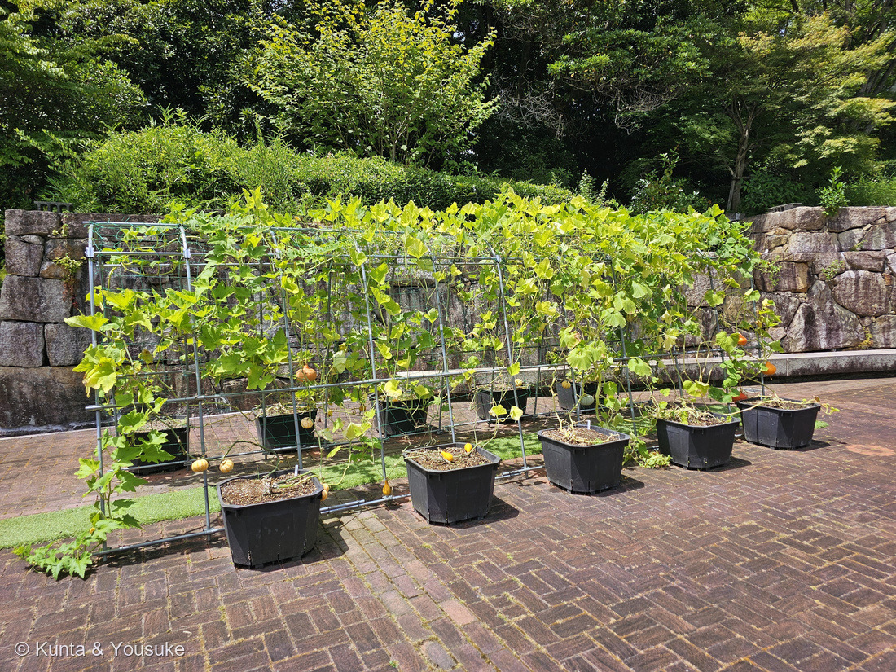
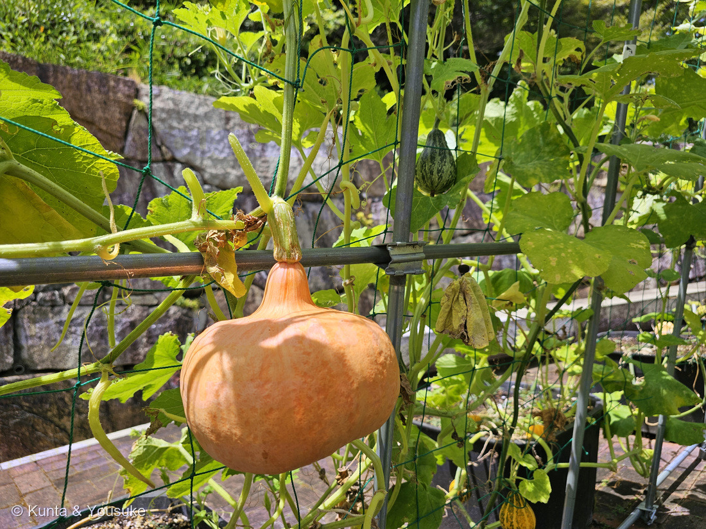
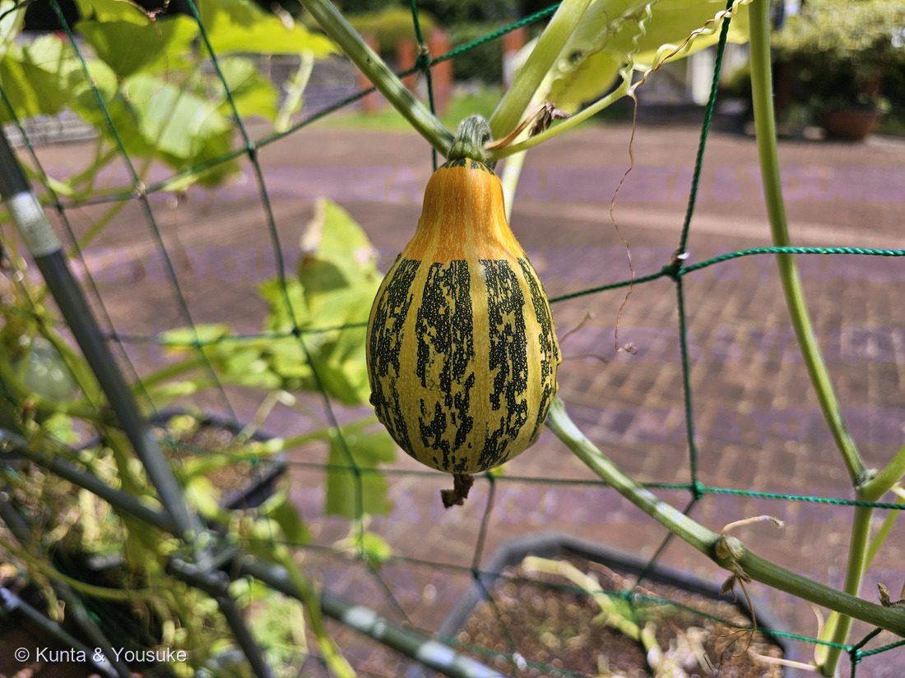
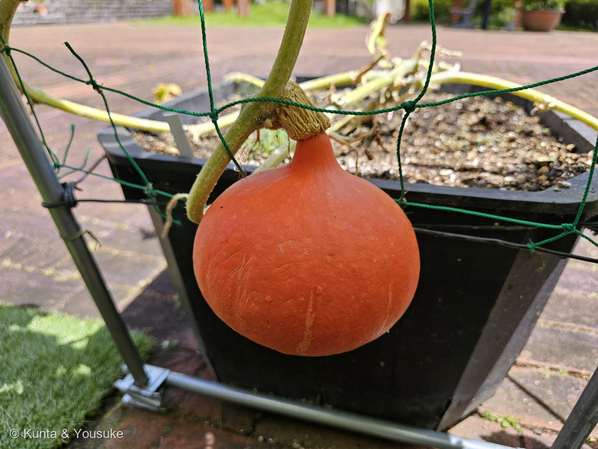
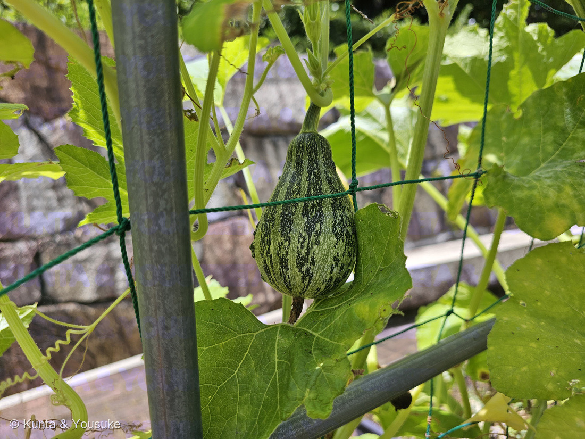
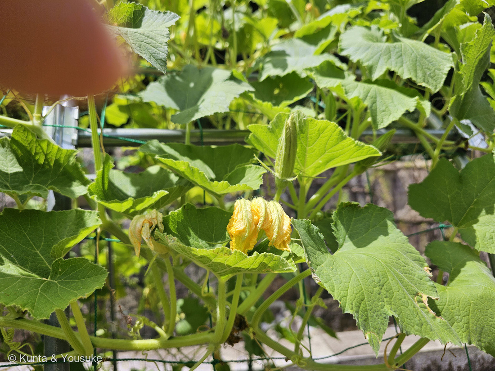

地図を読み込んでいるよ…
🔍 写真も地図も、押しているあいだ拡大して見られるよ（スマホは指を置いてすこし待ってね）。
🌍 の地図＝この子がもともと自生している場所を緑に。カボチャ属（Cucurbita）は南北アメリカ大陸の原産。⭐栽培される3種はふるさとがちがう＝ペポカボチャ（C. pepo）は北アメリカ〜メキシコ、ニホンカボチャ（C. moschata）は中央アメリカ、セイヨウカボチャ（C. maxima）は南アメリカ。⚠この展示の子たちは種を決めていないので、地図は属ぜんたいのふるさとを塗ってある。
⭐カボチャ属（Cucurbita）のふるさとは、南北アメリカ大陸だよ。⚠この展示は名札が撮れておらず、種を決めていないので、⭐この地図は「属ぜんたい」のふるさとを塗ってある。⭐⭐栽培される3種は、それぞれふるさとがちがう＝ペポカボチャ（C. pepo）は北アメリカ〜メキシコ／ニホンカボチャ（C. moschata）は中央アメリカ／セイヨウカボチャ（C. maxima）は南アメリカ——⭐写真③⑤の姿はペポカボチャらしいので、ほんとうは地図の北のほうだけかもしれない。⚠⚠日本は塗っていない——⭐「ニホンカボチャ」という名前の子でさえ、日本原産ではないんだ（16世紀にポルトガル船が持ちこんだといわれる）。⭐⭐スーパーのかぼちゃも、ハロウィンのかぼちゃも、このトンネルの子たちも、みんな海の向こうから来た子の子孫だよ。⭐同じ日に会った212 巨大カボチャは C. maxima＝この地図の南アメリカのほうから来た子。
⚠ 地図は国（日本と中国だけ県・省）までしか塗れないから、ほんとうの分布より広く見えていることがあるよ。地図はだいたいの場所。正確なところは、上の文を見てね。
ミニカボチャのなかま
Cucurbita sp. ── ⚠名札が撮れていないので、種も品種も決めていないよ
別名 · おもちゃカボチャ／観賞用カボチャ（＝この展示にまじっている子たちの呼び名）
ウリ科 · Cucurbitaceae（カボチャ属）── 6人目のウリ科。212カボチャに続く2人目のカボチャ属
燻太さんの一言「小さいカボチャもあったよ。でも、僕たちが料理で使う緑色のカボチャとは様子が違うね。カボチャのトンネルを展示する発想は斬新」──たぶん、品種どころか「種」からちがうよ
⭐⭐⭐ 燻太さんの「料理で使う緑色のカボチャとは様子が違うね」── たぶん「種」からちがう
⭐ その通りだと思う。——そして、ちがいは品種どころか、種のレベルかもしれない。
⭐⭐ 212にも書いたけれど、日本で「カボチャ」と呼ばれるものは、じつは3つの別の種だよ。
- セイヨウカボチャ（Cucurbita maxima） ── 南アメリカ
- ニホンカボチャ（Cucurbita moschata） ── 中央アメリカ
- ペポカボチャ（Cucurbita pepo） ── 北アメリカ〜メキシコ
- ⭐燻太さんが料理で使う「緑色のカボチャ」は、たいていセイヨウカボチャ（黒皮栗系）。
- ⭐⭐そして、写真③⑤のような洋なし形で、濃い緑のまだらが入る実は、ペポカボチャの観賞用品種（おもちゃカボチャ）によくある姿。⚠名札が撮れていないので断定はしないよ。
- ⭐⭐⭐ペポカボチャは、3つのなかでいちばん姿がバラバラな種なんだ。——ズッキーニも、ハロウィンのオレンジのかぼちゃも、そうめんかぼちゃも、このおもちゃカボチャも、ぜんぶ同じ Cucurbita pepo。⭐「同じ種なのに、ここまでちがう形になれる」子だよ。
- ⚠②のオレンジの玉ねぎ形と、④の赤オレンジの丸い実は、食べられるミニカボチャかもしれない。⭐展示には、観賞用と食用が混ざっていることが多いんだ。
⭐⭐ 5つの実、5つのちがう顔

⑤ まだ緑の、若い実。⭐形もまだらの入り方も、③とそっくりだよ（番号は上のギャラリーからのつづき）。
⭐ 同じトンネルに、こんなに色も形もちがう実がぶら下がっていた。
- ② オレンジ色で、首がきゅっとくびれた玉ねぎのような形。⭐手のひらより大きい。
- ③ 黄色い地に、濃い緑のまだら縞。洋なし形。⭐縞は上（へた側）まで届かず、へたのまわりだけ黄色い。
- ④ 赤オレンジの、まんまるい実。⭐表面はつるりとして、うっすら光っている。
- ⑤ 緑の地に、濃い緑のまだら縞。洋なし形で、まだ小さい。
⭐⭐⭐ ③と⑤をならべて見てほしい。——形もまだらの入り方もそっくりで、⑤のほうが緑、③のほうが黄色い。⭐もしかしたら、同じ品種の「これから」と「もう少しあと」なのかもしれない。⚠もちろん、ちがう品種の可能性もあるよ。決められない。
⭐ どの実も、へたのところがぐっと太くて、稜（すじ）が立っている。⭐⭐これはカボチャ属の実の目じるしだよ。
⭐⭐⭐ 燻太さんの「カボチャのトンネルを展示する発想は斬新」── 軽いから、空に吊れる
⭐ ほんとうに、うまいことを考えたなあと思う。
写真①を見ると、黒いプランターが8つならんで、その上にパイプとネットでトンネルが組んである。⭐つるはネットを登って、実はネットからぶら下がっている。⭐⭐これを「空中栽培」というよ。
⭐ いいことが、いくつもある。
- ⭐場所を取らない。——カボチャは本来、地面をはって何メートルも広がる子。⭐それを縦に立てれば、レンガ広場でも育てられる。
- ⭐⭐実が地面につかないので、傷んだり腐ったりしにくい。
- ⭐まわり全部に日が当たるので、色がきれいにそろう。
- ⭐⭐⭐そして、見て歩ける。——実が目の高さにぶら下がっているから、近くでじっくり見られる。⭐燻太さんが1分もかからずに5つの実を撮れたのは、そのおかげだね。
⭐⭐⭐⭐ そして、いちばん面白いのはここ。——同じ日の1時間10分あとに撮った212 巨大カボチャと、ちょうど反対なんだ。
- 巨大カボチャ（C. maxima 'Atlantic Giant'） ── ⭐重すぎて吊れない。地面に置いて、下にパレットと敷きものを入れて守る。
- ミニカボチャ（この子たち） ── ⭐軽いから、空に吊れる。
⭐⭐ 同じカボチャ属なのに、実の重さが、そのまま育て方を決めているんだね。
⭐ ちなみに、棚に登らせて日かげを作る仕立ては207 ヘチマの「緑のカーテン」と同じ考えかただよ。⭐あちらは日よけ、こちらは見せるため。
⭐ 花のこと ── ウリ科は、雄花と雌花が別

⑥ しぼんだ黄色い花と、これから開くつぼみ。⭐左上にちょっとだけ、燻太さんの指も写っているよ（番号は上のギャラリーからのつづき）。
- ウリ科は雌雄異花＝ひとつの株に、雄花と雌花が別々につく（207 ヘチマ・090 キュウリと同じ）。
- ⭐⭐見分けかたは、花のうしろ。——雌花は、花のうしろにもう小さな実がくっついている（子房下位）。⭐雄花は、細い柄があるだけ。
- ⚠写真⑥の花は、うしろのふくらみがはっきり見えないので、たぶん雄花。⭐でも角度のせいかもしれないので、断定はしないでおくね。
⏳ 宿題は、雌花をさがすこと。⭐「花のうしろに、もうカボチャの赤ちゃんがついている」——見つけたら、きっとかわいいよ。
同定について ── 「なかま」で止めた理由
⚠ この子たちは、種も品種も決めていない。⭐「ミニカボチャのなかま」で止めたよ（166 スズメガヤのなかま・195 トクサのなかま・203 タイタンビカスのなかまと同じ止めかた）。
理由は3つ。
- ⚠⚠名札が撮れていない。——⭐プランターには白い小さな札が立っているのが写っているけれど、ピントが合っていなくて読めなかった。
- ⚠観賞用のミニカボチャは、品種がとてもたくさんある。⭐しかも同じ品種でも、熟し具合で色がまるで変わる。⭐写真だけで名前を当てるのは無理だと思った。
- ⚠この展示には、種のちがう子が混ざっていそう。——⭐ひとつの名前でまとめてしまうと、うそになる。
⭐ 決められることは、ちゃんと決めたよ。——掌状に浅く裂ける大きな葉、くるくる巻いたひげ、黄色い花、へたに稜のある実。⭐ウリ科カボチャ属で、まちがいない。
⏳ 宿題は、名札を撮ってもらうこと。⭐そうしたら、この子たちにも名前をつけてあげられる。
参考：野菜ナビ・金糸うり（そうめんかぼちゃ）（ズッキーニと同じくペポかぼちゃの一種／旬は7〜9月／加熱すると果肉が糸状にほぐれる）／旬の食材百科・金糸瓜（きんしうり）／そうめんかぼちゃ（7月から収穫が始まり8月頃に多く出回る／原産はアメリカ大陸／石川県や岡山県が主産地）／⭐212 カボチャ 'アトランティックジャイアント'のページに、カボチャ3種（C. maxima／C. moschata／C. pepo）の出典をまとめてあるよ